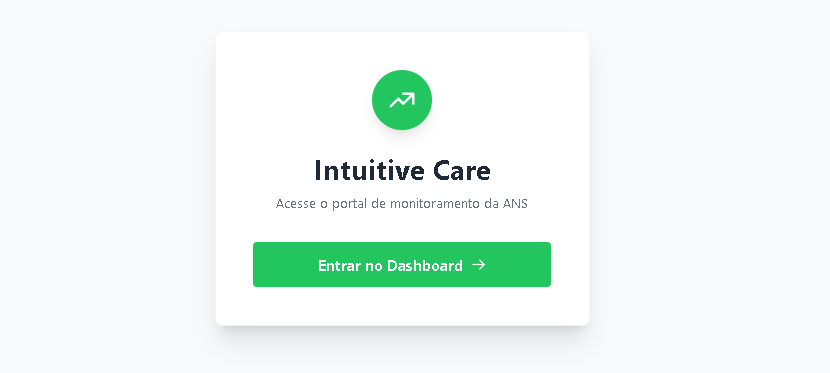
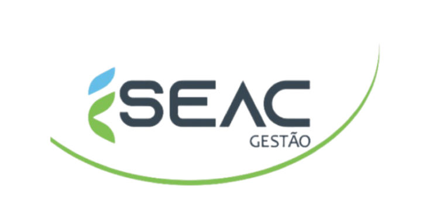
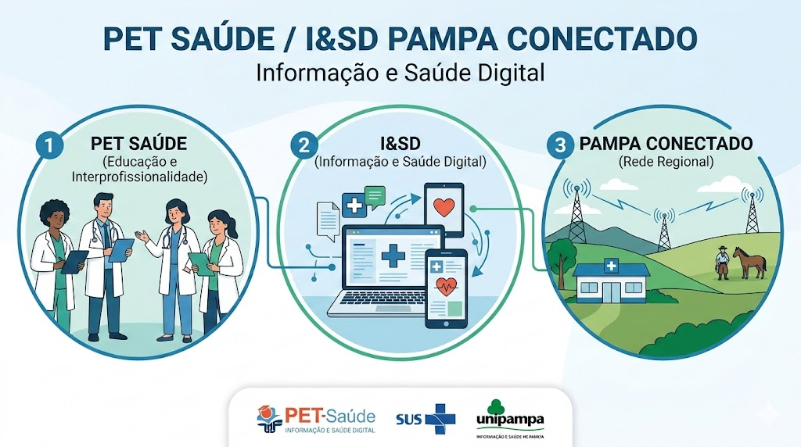

Olá, eu sou o...
Olá, eu sou o...
Sou graduando em Engenharia de Software pela Unipampa e atuo na construção de ecossistemas escaláveis e seguros.
Minha base técnica une a robustez do Backend (Python, Java) e a dinamicidade do Frontend (React, Vue.js), apoiada por uma forte cultura de Qualidade de Software (QA).
Desenvolvo pipelines de ETL com Pandas, integro APIs resilientes e aplico padrões arquiteturais avançados, como Arquitetura Hexagonal e Medallion Architecture. Acredito que um bom produto digital deve ser rápido na tela, seguro no banco de dados e protegido por baterias de testes automatizados com Pytest e Selenium.

Solução end-to-end com Web Crawler, pipeline ETL para sanitização de dados da ANS e dashboard reativo para análise financeira.

Sistema de fluxo de caixa agrícola focado em alta confiabilidade de dados e componentes reutilizáveis integrados via APIs REST.

Plataforma modular para centralizar e dar transparência aos indicadores de saúde locais, com autenticação RBAC e integração OAuth.
Projeto em desenvolvimento ativo vinculado ao Grupo PET-Saúde Transparência. Desenvolvido em parceria com a UNIPAMPA e as Secretarias de Saúde de Alegrete e Bagé, o sistema visa criar dashboards interativos para análise de indicadores em tempo real.
O acesso é restrito no momento para resguardar as políticas de governança e a segurança de dados de saúde integrados à RNDS.